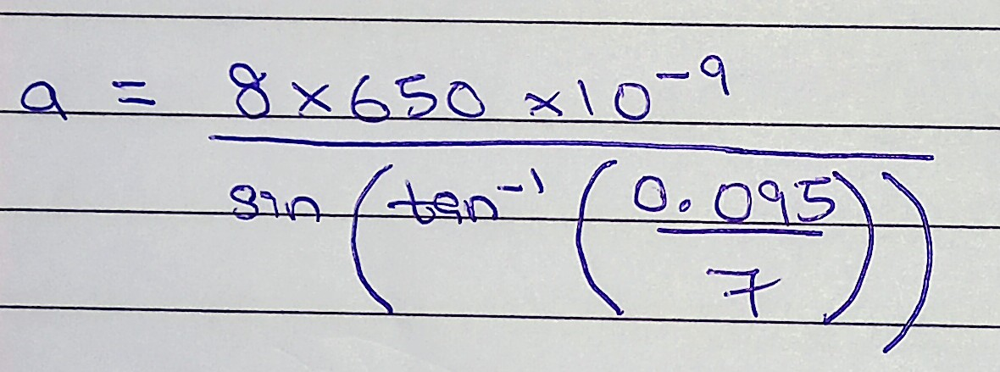

Aim
To simulate Diffraction of DNA with help of spring
Our team used springs to help simulate Diffraction of DNA
Materials Required
- Laser of Red Light
- 2 Convex Lens (of focal length 50mm and 100mm respectively) to widen light and make observations easier
- A spring of thickness similar to wavelength of light
- Pencil and paper to record diffraction pattern
Theory
We are using a spring to simulate Diffraction of DNA as observed Franklin Rosalind
What is the experiment about?
Babinet’s principle states that the diffraction pattern of an
obstacle is the same as the diffraction pattern of an aperture of
the same shape.
According to this principle, the diffraction
pattern formed by the two straight sections of the wire (one on
each side) is equivalent to the diffraction pattern of two single
slits oriented at a certain angle with respect to each other.
We thus observe an X pattern on the screen when we conduct the experiment.
Procedure
- Place a spring.
- If you wish to make observations easier, use convex lens to widen laser light as shown below -
- Direct a laser beam toward the spring. (Distance to screen = 7m)
- Check the diffraction pattern.
- Record the diffraction pattern on paper.
Observations
Diagram

Photo

Sharp minima shows wire spacing.
Broad minima shows wire width.
Calculations
Calculations are as follows -
- m=8 (number of minimum)
- Ymg = 0.095m
(distance to 8th minimum) - D = 7m (distance from laser to screen)
- λ = 650 x 10-⁹m
(wavelength of laser light) - α = 13.5° (pitch angle)
- d = 1.8 x 10-³m
(distance between sharp maxima)
How to calculate Thickness of Spring
To find thickness of spring (a) -
a(sinΘmin) = mλ

a = 0.383mm
Conclusion
What have we completed and understood so far -
- Understood How Diffraction works
- Simulation of Diffraction of DNA
- Reproduction of the experiment using a visible laser and a basic ballpoint pen helical spring
- Measuring and recording the experiment's necessary parameters
- Sketching a diffraction pattern using a pencil on paper
- Calculating the spring's thickness, pitch, and radius using the experiment's recorded parameters
- Concluded that calculated values could show diffraction.